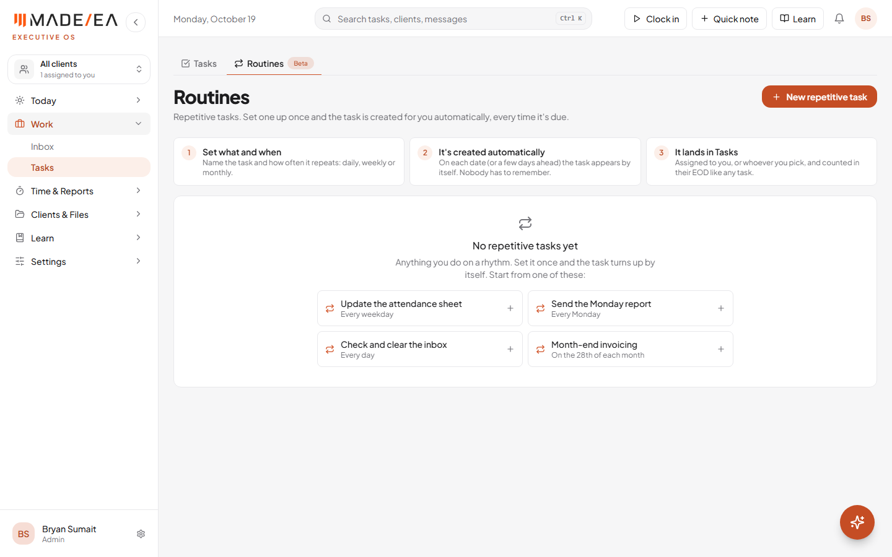
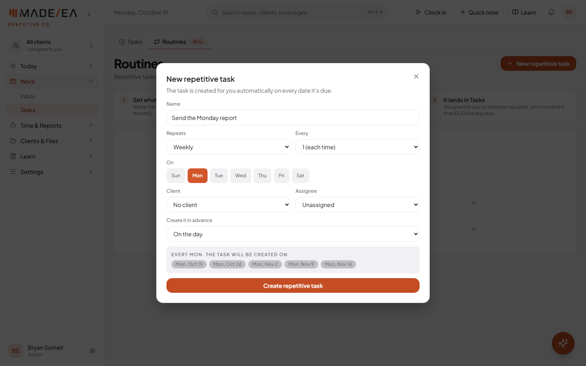
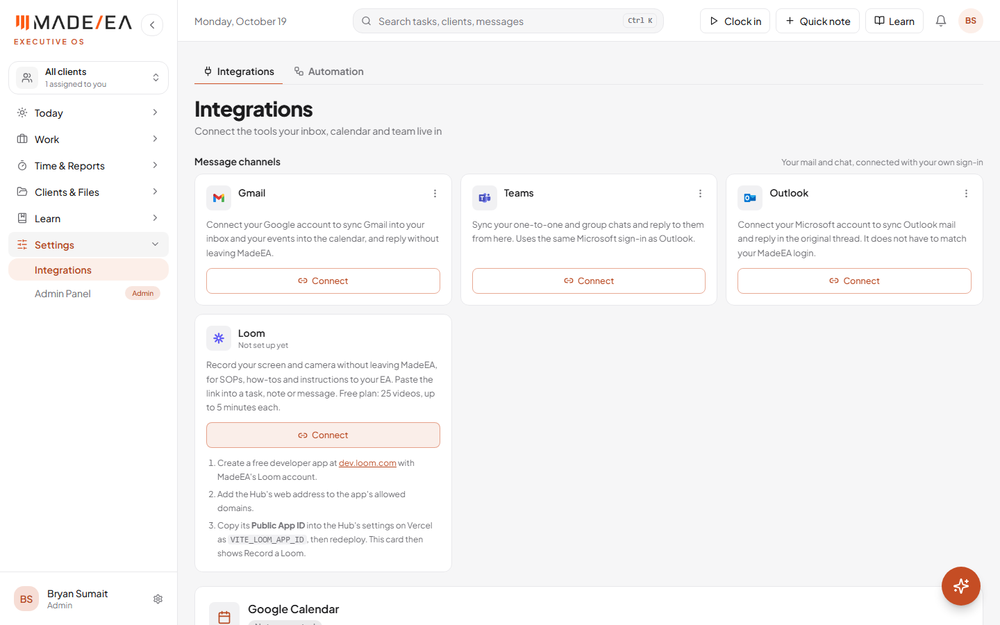
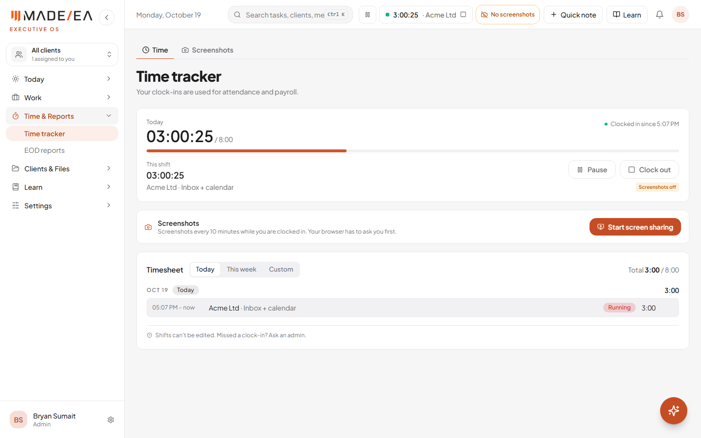
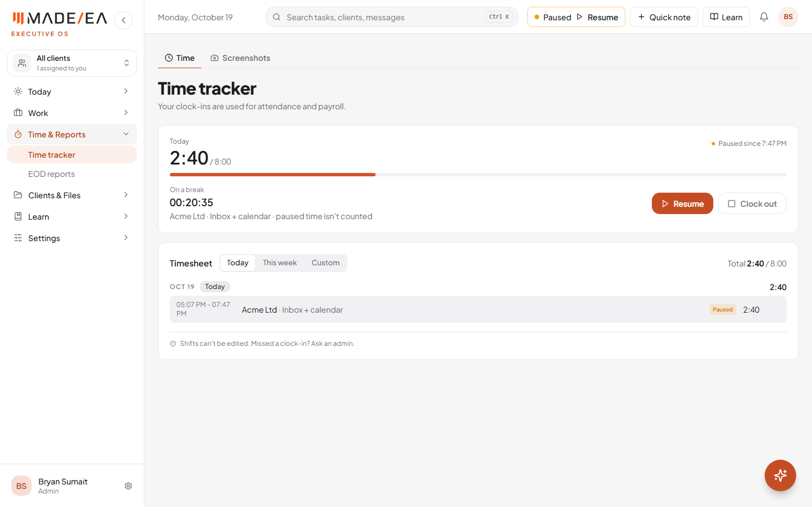

Repetitive tasks, Loom, and a pause button for the clock
Three requests, all done. Routines now read clearly as repetitive tasks that create themselves on schedule. Loom sits on the Integrations page beside the message channels. The time tracker can be paused and resumed. All of it is live at hub.madeeas.com.
Work done 19 October 2026Previous report 16 OctoberStatus Live
At a glance
4one-click starters for the most common repetitive tasks
25 videosof up to 5 minutes each, on Loom's free plan
A routine is a task that repeats: set it up once, and the task is created automatically on every date it's due (or a few days ahead), assigned to you or whoever you pick. The page now says this plainly:
How it works in three steps at the top: set what and when, it's created automatically, it lands in Tasks.
One-click starters when the page is empty: update the attendance sheet (every weekday), send the Monday report, check and clear the inbox (daily), and month-end invoicing (the 28th). Each one fills in the form for you.
The exact dates the task will be created are shown before you save, and each routine shows "Next tasks created" with its next dates.

Routines: how it works, and the starters. Test account.

New repetitive task: the dates it will be created. Test account.
2Needs a Loom app ID
Loom on the Integrations page
Loom now has its own card beside Gmail, Teams and Outlook. As agreed on the 13 October call, it uses Loom's free recording kit rather than building screen recording from scratch. You can record your screen and camera without leaving MadeEA, for SOPs, how-tos and instructions to an EA. The link is kept on the card, ready to paste into a task, note or message. The recording kit only loads when someone presses Record, so the rest of the Hub stays fast.
One step to switch it onCreate a free developer app at dev.loom.com on MadeEA's Loom account, add the Hub's web address to its allowed domains, and add its Public App ID in Vercel as VITE_LOOM_APP_ID. After the next deploy the card shows "Record a Loom". Until then, Connect on the card shows these same steps.

Loom beside the message channels, with its setup steps open. Test account.
3Live
Pause and resume the time tracker
Pause is on the Time tracker page, and as a small button beside the clock in the header on every page. While paused, the clock and screenshots stop, and the break is not counted toward attendance or payroll.
While on a break the page shows "Paused since …" and how long the break has lasted, and the header clock turns into an amber Resume button.
Resume carries on with the same client and note, and asks to share the screen again in the same click.
Clocking out from a break works like any clock-out: the end-of-day report check, and "why are you leaving early?" on a short day.
The timesheet marks where each pause happened, and the rule that a finished shift can't be edited still holds. A paused shift can only be marked finished, never changed.

Clocked in: Pause beside Clock out, and in the header. Test account; screen sharing wasn't started in this test.

On a break: the break timer, Resume and Clock out. Test account.
If someone still sees the old versionTheir browser tab was opened before the update. Pressing Ctrl+Shift+R, or closing and reopening the tab, loads the new version.
What's next
Loom app ID added in Vercel, so recording can be switched on and tested with the free plan.
Abder's specs for the other pages' AI actions (Inbox, Dashboard, Calendar, Time tracker, EOD reports), built the same way as Tasks.
Internal team testing, starting with a short walkthrough of how the Hub works.
Google verification: needs MadeEA's own domain, then the demo video and permission notes.